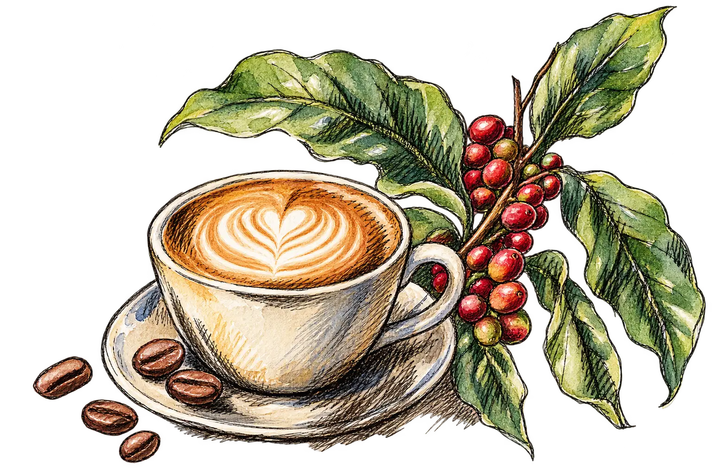

The global journey behind an Australian ritual
51%
of Australians aged 14 and over drink coffee in an average week.
Yet Australia grows very little of it. So where does our coffee come from?
Australia has 56,304 café and restaurant businesses. Victoria has the most for its population.
Note: the ABS counts cafés and restaurants together, as one industry, and counts businesses, not individual shop fronts.
The Northern Territory has fewer than 10 for every 10,000 residents, under half Victoria’s rate.
Australia gained 616 of these businesses in a year, but its population grew faster.
Each line joins June 2024 to June 2025; a line that slopes down means fewer businesses per 10,000 residents. Victoria is drawn thicker.
Victoria is the densest state, yet its density still fell.
Overall, 91% have fewer than 20 employees.
Each column is a state, as wide as its share of all businesses. ACT, NT and Tasmania are combined.
In 2025, Australia imported 112 million kilograms of coffee from the 22 selected coffee-growing countries, about four kilograms per person.
Line width and circle area show imported weight. Lines end in central Australia, not at a port.
Papua New Guinea ranked fourth among the 22 selected suppliers in 2025, despite ranking 22nd in world coffee production in 2024.
One sack is 1,000 tonnes, rounded. Exact tonnes are at the end of each row.
Four of Australia’s five largest suppliers in 2025 were also among the world’s five largest producers in 2024.
Australia is not on this map: FAO has no production record for it.
Drag the slider to see any year back to 1990. Countries under 25,000 tonnes are not drawn.
That map has changed. Brazil has stayed first in every year shown, while others swapped places.
Each line follows one country’s rank among 78 producers; 1 is the biggest. Where lines cross, two countries swapped places.
Today, South America grows the most; Asia and Oceania come second.
Each rectangle’s area shows tonnes grown in 2024; rectangles are grouped by region.
Yield is the coffee harvested from each hectare. Among the world’s ten largest producers in 2024, it varies widely.
Darker cells mean higher yields, in tonnes per hectare.
The bottom six countries stayed below one tonne per hectare in every year from 2015 to 2024. The Central African Republic’s reported output rose sharply after 2015; FAO’s figures are shown as published.
From October 2025 to September 2026, the ICO’s composite coffee price peaked in November and reached its lowest point in June.
All of this coffee is sold on a world market. These are prices for green, unroasted beans, before any café adds its costs.
Each dot is a month, labelled from Oct 2025 to Sep 2026 and shaded from light to dark; the two prices moved broadly together over the year, though not every month. Arabica is the simple average of three ICO price groups.
Which bean is grown matters too. Robusta, the cheaper of the two (chart 10), now makes up a bigger share.
Each square is 1% of the beans grown that year.
Prices also depend on how much coffee is grown and drunk. 12A breaks down one year; 12B shows the years around it.
The 2024/25 deficit was the fourth consecutive annual shortfall.
12A shows 2024/25 step by step. 12B shows each year’s gap; bars below zero are shortfalls. *2025/26 is an ICO estimate.
Chart code, top (JSON) · Chart code, bottom (JSON) · Data (CSV)
October 2025 to August 2026: world beans fell 12%, coffee, tea and cocoa 1.5%; eating out rose 3.6%.
All lines start at 100 in October 2025; below 100 means cheaper.
What is counted: the ABS measures “coffee, tea and cocoa” and “meals out and take away foods”. Neither is the price of a café coffee on its own.
Among the 22 selected supplier countries, Brazil, Colombia and Vietnam supplied more than half of the recorded import weight in 2025, and all three are among the world’s largest producers.
At home, Australia’s cafés and restaurants are mostly small businesses. And while the world bean price fell 12% from October 2025 to August 2026, Australian coffee, tea and cocoa prices fell only 1.5%.

This page is written for general Australian readers; no background in statistics or the coffee trade is needed. Below is where every number comes from, and what to keep in mind.
| Charts | What it shows | Source | Period |
|---|---|---|---|
| 1, 2, 3 | Cafés and restaurants by state and number of employees | Australian Bureau of Statistics, Counts of Australian Businesses (data cube 2), released 16 December 2025 | June 2024 and June 2025 |
| 1, 2 | State populations, used to count cafés per person | Australian Bureau of Statistics, National, state and territory population: June 2025 and June 2024 | June 2024 and June 2025 |
| 4, 5 | Coffee imported into Australia, by country of origin | UN Comtrade, Australia's own import records, customs code 0901 (coffee) | 2025 |
| 6, 7, 8, 9 | Coffee grown and coffee yield per hectare, by country | Food and Agriculture Organization of the United Nations, through Our World in Data: production and yield | 1961 to 2024 |
| 10, 11, 12 | Wholesale prices, Robusta share of production, world supply and demand | International Coffee Organization, Coffee Market Report, September 2026 (Tables 1 and 3, and the export text on page 5) | October 2025 to September 2026 (prices); coffee years 2020/21 to 2025/26 (supply and demand) |
| 13 | What Australians pay for coffee and for eating out | Australian Bureau of Statistics, Consumer Price Index, Australia, August 2026, Table 3, expenditure classes “Coffee, tea and cocoa” and “Meals out and take away foods”, weighted average of eight capital cities | October 2025 to August 2026 |
| Introduction | Share of Australians who drink coffee in an average week | Roy Morgan Research, quoted in its news readership release of 24 November 2025 | 12 months to September 2025 |
| All maps | Map shapes and country locations | World Atlas (Natural Earth), Australian state boundaries by Rowan Hogan (simplified), country coordinates by dr5hn | - |